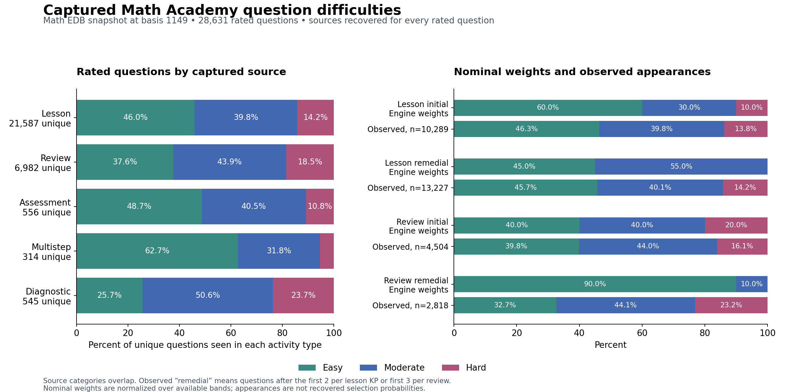

Engine weights and captured question difficulties
The current engine’s zero Hard weight for remedial lessons and reviews does not match the captured behavior. Hard questions appear after the initial cutoff in both activity types, including in human task history. The largest numerical difference is review remedial selection: the engine specifies 90% Easy, 10% Moderate, and 0% Hard, while the captured additional questions are 32.7%, 44.1%, and 23.2% respectively.
The analysis covers every question with a difficulty rating in the math database at transaction basis 1149, captured on October 11, 2026. The database has 55,015 questions, of which 28,631 have a rating and 26,384 do not. Every rated question was matched to a source activity; every available source rating agreed with the current database rating.

The full rated question inventory contains 12,680 Easy, 11,635 Moderate, and 4,316 Hard questions. The source files distinguish lessons, reviews, assessments, multisteps, and diagnostics, even where EDB stores only shared question and knowledge-point membership.
A question can appear in several activity types. There are 1,344 such questions, so the activity rows above overlap and should not be added together. Each row deduplicates question identities within its activity type; the final row deduplicates across the whole database.
The comparison with engine weights uses question appearances rather than unique bank entries: one appearance per question identity per task, with repeated use across different tasks retained. The rated questions have 32,449 source appearances across 3,248 completed tasks. Lessons contribute 23,516 appearances in 1,616 tasks; reviews contribute 7,322 in 1,508 tasks. Assessments contribute 556 in 65 tasks, multisteps 314 in 41 tasks, and diagnostics 741 in 18 tasks.
The engine switches from initial to remedial weights after the first two practice questions per lesson knowledge point or the first three questions per review. The same cutoffs were applied to source order. “Additional” in the source tables means questions beyond those cutoffs; the captures do not explicitly label Math Academy’s internal sampling phase. Assessments, multisteps, and diagnostics have fixed captured sequences and are outside these four engine distributions.
Lesson initial selection produces a less Easy-heavy observed mix than the nominal 60 / 30 / 10 configuration. Review initial selection is comparatively close to 40 / 40 / 20. Both remedial configurations exclude a difficulty band that occurs in the sources. Across additional questions, the lesson sample contains 1,884 Hard appearances, and the review sample contains 653.
Capture policy matters most for the remedial comparison. Older automated captures dominate the additional-question sample. Their saved policies frequently specify CWCWC or WCWCC, deliberately alternating correct and wrong answers to capture more questions. These are task presentations elicited by a collection policy, rather than a representative learner error distribution. Recent automated captures and human history therefore appear separately below.
The human additional samples are small: 89 rated lesson appearances and 18 review appearances. Their Hard shares are 7.9% and 5.6%. This still contradicts a strict zero Hard weight, while the small review sample cannot establish a reliable replacement distribution. The recent automated review sample also differs sharply from the current remedial weights: 30.4 / 44.7 / 24.9 over 237 additional appearances.
Two saved human tasks illustrate why the zero needs scrutiny. In lesson 11611286, one KP has the ordered sequence Hard Correct, Hard Incorrect, Hard Correct, Moderate Correct. The third question is q-329274. In review 4866772, the ordered sequence is Moderate Correct, Hard Correct, Hard Incorrect, Hard Correct, Easy Correct. The fourth question is q-236651. These are genuine additional questions following an incorrect answer, not an inference from bank membership.
Available bands change the realized percentages. The selector first chooses a difficulty band, normalizing the weights over available fresh, usable questions, then chooses a question in that band. A large band does not receive extra probability merely because it contains more questions. Among 3,712 knowledge points with at least one rated question, only 439 (11.8%) contain all three rated bands. There are 862 Easy-only KPs, 404 Moderate-only KPs, and 144 Hard-only KPs. A nominal 60% Easy weight therefore need not produce 60% Easy across tasks.
An illustrative calculation applies the current engine weights to the current captured rated banks at each source position, excluding earlier questions in that source sequence. Lesson candidates come from the question’s KP; review candidates come from the captured topic. It assumes all those rated questions are usable and otherwise fresh, and omits earlier learner history, answer-key completeness, unrated fallback, and Math Academy’s uncaptured bank. These assumptions prevent treating it as a production prediction.
Availability brings review initial selection fairly close to its observed mix. It does not explain the remedial Hard questions: a zero weight still excludes Hard whenever the engine selects from rated bands. The lesson calculation also reaches 485 source positions with no positively weighted rated band remaining; actual usability and unrated fallback would determine whether the running engine can continue there.
The data supports revisiting the remedial exclusions first. If the objective is to reproduce observed capture behavior, both lesson and review remedial selection should permit Hard questions, and review remedial selection should allow substantially more Moderate questions. The full observed percentages are useful empirical baselines, but automatic replacement with those percentages would overfit a collection policy and a captured subset of the bank. Initial weights warrant calibration against available bands and topic mix before changing them.
Coverage and validation were checked by joining the database’s current question IDs, ratings, KP membership, and policy records at one fixed basis. Activity types and source order came from normalized captures, their saved state, and original completed-task HTML. Human lesson sequences use the source DOM’s KP groups; reviews use whole-task order. Archived source streams include question-capture, question-capture-workers, capture, progress-history-2026-10-04, and manual assessment/multistep folders.
Source sequences retain questions absent from the rated database, so an unimported question never moves a later question into an initial slot. There are 99 lesson/review sequences with at least one question outside the rated database. Restricting the comparison to fully represented sequences changes the four E / M / H results only slightly: lesson initial 46.3 / 39.9 / 13.9; lesson additional 45.7 / 40.1 / 14.3; review initial 39.7 / 44.1 / 16.2; review additional 32.6 / 44.2 / 23.2.
The database itself has no rated question-to-imported-Math-Academy-task links through learner-task records. Direct activity structure resolves only 1,115 rated questions, and shared KP membership does not establish whether a question was captured in a lesson or review. Source-document recovery supplies that distinction. None of the rated questions are canonical worked examples. All rated questions have KP membership.
Exact source combinations without overlapping counts
Analysis files preserve the question-level audit trail, all phase counts, KP bank coverage, and the fixed EDB query results. The database and engine configuration were read without changes.
Reproduction: capture_db.py reads EDB at basis 1149; index_sources.py indexes source appearances; analyze.py computes and validates counts; render_report.py renders this report. Use the project’s existing EDB peer configuration and Python environments. Raw evidence may include captures made after the snapshot; only identities present with a rating at basis 1149 enter the analysis.